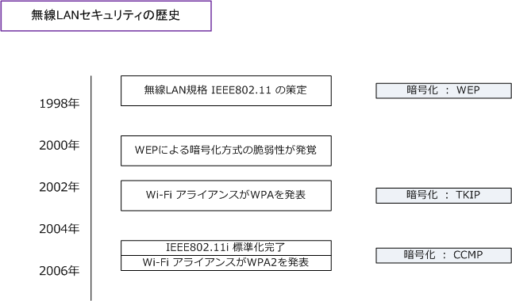
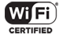

Wireless LAN - Enterprise Security
無線LANのセキュリティ対策（さらに高度セキュリティ）
そもそも暗号化にWEPではなく、WPA規格のTKIPまたはWPA2規格のCCMPなどの暗号化を実装させて MACアドレスフィルタリングではなく、IEEE802.1X認証を実装させる方式が現在の最も主流な実装です。
| セキュリティ項目 | 従来のセキュリティ対策 | 現在主流なセキュリティ対策 |
|---|---|---|
| 暗号化 | WEP | CCMP |
| 認証 | MACアドレスのフィルタリング | IEEE802.1X による認証 |
| セキュリティ規格 | WEP ( IEEE802.11 ) | WPA2 ( IEEE802.11i ) |
WEPの脆弱性が発覚した時、この事態を深刻に受け止めたIEEE802.11では新たなセキュリティ規格として IEEE802.11i (WPA2) の策定化作業をはじめました。しかし、標準化にはかなりの時間が必要であることが 分かり、この事態に危機感を募らせたWi-Fi アライアンスがIEEE802.11i（WPA2）の中で容易に実装できる セキュリティ技術を部分的に先取りした規格を策定しました。それが、WPA（Wi-Fi Protected Access）。 そして2004年6月にはようやく IEEE802.11i の標準化が完了して、多くの製品にその実装が進められました。

| セキュリティ規格 | WEP ( IEEE802.11 ) | WPA | WPA2 ( IEEE802.11i ) |
|---|---|---|---|
| 規格策定の団体 | IEEE802.11 | Wi-Fiアライアンス | IEEE802.11i |
| 規格策定の時期 | 1997年 | 2002年10月 | 2004年6月 |
| 暗号化方式 | WEP | TKIP | CCMP |
| 暗号化アルゴリズム | RC4 | RC4 | AES |
| 暗号鍵の長さ | 40 or 104bit | 128bit | 128bit |
| 認証鍵の長さ | - | 64bit | 64bit |
| IVの長さ | 24bit | 48bit | 48bit |
| 整合性の検証 | CRC32 | MIC | CCM |
| アンチ ・ リプレイ攻撃 | なし | あり | あり |
| 認証方式 | ① オープンシステム認証 ② シェアードキー認証 ③ オープンシステム認証 ＋ IEEE802.1x認証 |
① PSK (Pre-Shared Key) 認証 ② IEEE802.1x認証 |
① PSK (Pre-Shared Key) 認証 ② IEEE802.1x認証 |
「IEEE802 ～ 」という用語は規格の名称でもあり、策定委員会の名称でもあります。つまり1つの用語で2つの意味を持っています。
Wi-Fi アライアンス (WFA) とは
Wi-Fi アライアンスとは、無線LAN製品の普及促進、および異なるメーカー間の無線LAN製品の互換性を 保証することを目的とした業界団体のこと。Cisco、Intel、Nokiaなど数百社のメーカが参画しています。 最近では大手のネットワーク関連の業界だけでなく Nintendo などのゲーム業界からの加盟もあります。
Wi-Fiアライアンスの設立背景として、IEEE802.11規格が曖昧であることもあり異なるメーカー間の無線 LAN機器が相互接続できない事態がよく発生したため、無線LAN業界の大手メーカーが、無線LAN機器の 相互接続性を推進するための業界団体を設立しました。Wi-Fiアライアンスは加盟メーカーに対して認証 試験を行っており、異なるメーカー間の無線LAN機器で無線LAN通信や暗号化などの通信が成功した場合 その製品は Wi-Fi CERTIFIED ロゴの使用が許可されます。それによって相互接続性をアピールできます。

異なるメーカーの無線LAN機器であっても、それらのプロダクトに上図の「Wi-Fi CERTIFIED」のロゴが あれば利用者としては安心して利用できます。ところで「Wi-Fi」という言葉はブランド名を意味しますが Wi-Fi = 無線LANの意味で使われている場合もあり、一般利用者には Wi-Fi の方が馴染みがあるようです。
IEEEとWi-Fiアライアンスとでは、IEEE802.11における規格において、以下の通り呼称が異なります。
| 規格 | IEEEにおける呼称 | Wi-Fiアライアンスにおける呼称 |
|---|---|---|
| セキュリティ規格 | IEEE802.11i | WPA2 |
| QoS関連規格 | IEEE802.11e ( EDCA ) | WMM |
| QoS関連規格 | IEEE802.11e ( HCCA ) | WMM-SA |